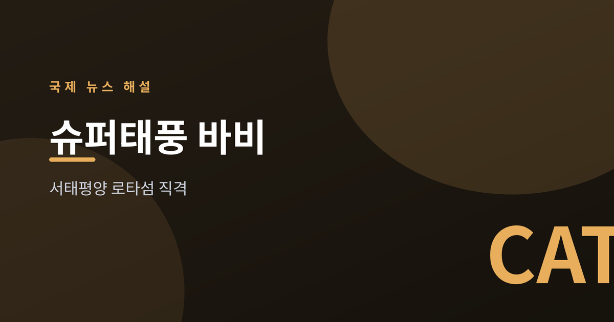
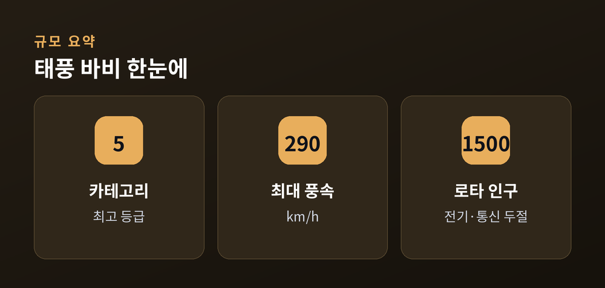
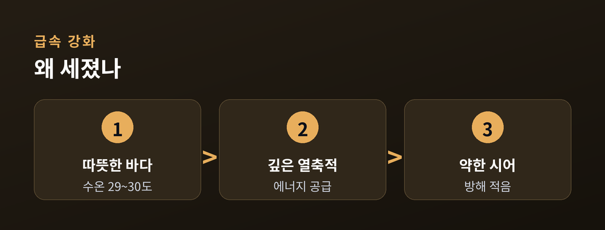
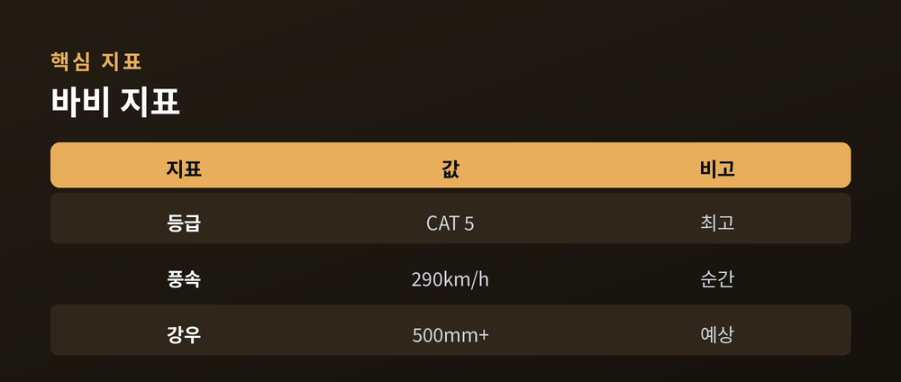

로타섬 직격, 다음은 대만·중국

7월 6일(현지시간) 아침, 슈퍼태풍 바비(Bavi)가 미국령 북마리아나 제도의 로타섬을 직격했습니다.
태풍의 눈이 섬 북쪽 해안을 불과 몇 km 거리로 스치며 지나갔습니다.
미국 국립기상청은 최대 순간풍속을 시속 약 180마일(290km/h)까지 관측했다고 밝혔습니다.
인구 약 1,500명의 로타섬은 전기·수도·통신이 대부분 끊겼습니다.
통신탑이 쓰러지고 도로 여러 곳이 침수·낙석으로 막혔습니다.
현지 당국은 "심각한 피해"를 보고했으나, 6일 저녁까지 인명 피해는 보고되지 않았습니다.

바비는 이번 주 서태평양에서 올해 세 번째 카테고리 5(최고 등급) 태풍이 됐습니다.
불과 하루 남짓 만에 풍속이 크게 뛰는 급속 강화를 거쳤습니다.
전문가들은 그 배경으로 따뜻한 바다를 지목합니다.
당시 해수면 온도는 29~30도로 높았고, 열이 바다 깊은 곳까지 쌓여 있었다는 분석입니다.
바람의 방해(윈드시어)가 약했던 점도 강화를 도왔다고 봅니다.
이런 조건은 바다·대기 시스템이 강한 엘니뇨 국면으로 접어들 때 나타난다는 해석이 나옵니다.

한 번의 태풍만으로 기후변화를 단정하기는 어렵습니다.
다만 높은 해수 온도가 급속 강화를 부추긴다는 점은 과학계가 오래 지적해 온 흐름입니다.
| 지표 | 이번 태풍 바비 |
|---|---|
| 등급 | 카테고리 5 |
| 최대 풍속 | 약 290km/h |
| 예상 강우 | 최대 500mm 이상 |
수치는 관측 시점과 기관에 따라 조금씩 다를 수 있습니다.

바비는 서·북서쪽으로 이동하며 대만 또는 중국 방면을 향하고 있습니다.
7월 10일경 아시아에 접근할 수 있다는 전망이 나옵니다.
먼 시점의 강도 예측은 신뢰도가 낮습니다.
해당 지역은 경로와 강도 변화를 계속 주시할 필요가 있습니다.